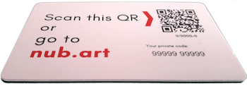

Preguntas frecuentes sobre el sistema de visitas guiadas para grupos
Nubart Live
Las tarjetas del paquete Básico están impresas en cartón ultracompacto. Pero para los paquetes Medium y Profesional puedes elegir el material ecológico en el que desees imprimir tus tarjetas:
Cartón especial ultracompacto, con certificación FSC (recomendado).
PVC reciclado.
No importa qué clase de material elijas: en Nubart compensamos en su totalidad el CO2 emitido durante la producción de tu pedido, incluyendo el envío de las materias primas, el proceso completo de impresión, el embalaje y el envío a destino.
Comprueba aquí el CO2 que hemos compensado hasta la fecha.
Todo el "trabajo de fondo" de nuestra tecnología tiene lugar en el smartphone del guía. Por lo tanto, es deseable que quienes ejerzan de guía dispongan de un smartphone moderno con un buen procesador y una batería razonablemente nueva.
Sin embargo, esto no se aplica a los visitantes: para los visitantes, el consumo de batería no es mucho mayor que al escuchar un podcast o un audiolibro. Como ejemplo: una hora de uso continuo consume el 8% de la batería en un teléfono Android de 4 años.
Alrededor de 20 MB por hora. Como nuestro sistema es unidireccional (sólo habla el guía) y no transmitimos vídeos, nuestro sistema consume mucho menos datos que una reunión por Zoom o Skype.
La personalización del diseño está incluida en nuestros paquetes Medio y Profesional.
Usted nos envía las imágenes, logotipos y otros elementos que desea en su tarjeta y nuestro diseñador creará varias propuestas de diseño para que usted elija.
Si te gusta el diseño que ves en la imagen, impreso en cartón extra compacto ecológico, para Nubart Live nuestro pedido mínimo son las 500 unidades de nuestro Paquete Básico.
Si prefieres que tus tarjetas estén personalizadas, el pedido mínimo es de 3.000 unidades.
Nuestro paquete Básico incluye a dos guías por cada pedido de 500 tarjetas.
Si adquieres nuestro paquete profesional de 5.000 tarjetas, el número de guías es ilimitado y puedes gestionarlas directamente en tu área de cliente.
No. Solo necesitará una tarjeta por cada miembro del grupo, ya que nuestras tarjetas Nubart Live son intransferibles, pero reutilizables. Simplemente pida a cada miembro de su grupo que conserve su propia tarjeta para poder volver a utilizarla durante el viaje.
Para evitar confusiones durante el viaje, recomendamos que cada usuario escriba su nombre en su tarjeta. Lee aquí nuestros consejos para emplear Nubart LIVE en un viaje.
Un pequeño retraso de hasta un segundo entre el emisor y el receptor (latencia) es inevitable. La latencia se ve influida por varios factores, como la potencia del smartphone, la calidad de la conexión y si el emisor y el receptor utilizan el mismo proveedor de datos móviles o bien dos distintos. Sin embargo, si el guía habla en voz baja, el efecto eco de la latencia será apenas perceptible, ya que para el visitante predominará la voz recibida en el smartphone.

Reverso de una tarjeta Nubart Técnicamente podríamos generar QRs únicos y hacerlos escaneables desde el móvil, como en las tarjetas de embarque. Pero hay varias buenas razones a favor de nuestras tarjetas:
No todo el mundo sabe cómo escanear un código QR. Nuestra tarjeta proporciona la opción alternativa de teclear un código alfanumérico.
Siempre hay alguien que llega tarde al grupo: Como nuestra tarjeta es muy fácil de utilizar y ya lleva las instrucciones impresas, el guía sólo tiene que entregárserla discretamente al recién llegado, previamente escaneada, sin interrumpir su discurso.
Los participantes tienen la posibilidad de volver a introducir o escanear el código por su cuenta en cualquier momento si tienen problemas con el teléfono inteligente (por ejemplo, cierre accidental del navegador).
Las tarjetas son intransferibles, pero un participante puede reutilizar su propia tarjeta para varios tours.
Si quieres atender la llamada, sólo tienes que hacer clic en "Mute" y contestar.
El grupo permanecerá en espera mientras realizas tu llamada. Cuando termines de hablar, regresa al navegador. Si no ves a todos los participantes del grupo con una luz verde, simplemente recarga la página: todas las conexiones se restablecerán automáticamente sin que tengas que volver a escanear los códigos QR de los participantes.
¡Cuidado! Si empleas un Android y te olvidas de clicar en "Mute" antes de contesar, los miembros del grupo podrán escuchar lo que digas a la persona que llama, aunque no puedan oír a esa persona. Si empleas un iPhone, no te oirán a ti ni a la persona que llama.
No.
Tan solo tendrás que escanear todas las tarjetas de tu grupo una única vez, al comienzo de tu viaje. El grupo que hayas abierto quedará guardado en tu cuenta de Nubart aunque tú o los viajeros cierren el navegador. Si un viajero rezagado se uniera al grupo unos días más tarde, simplemente tendrás que escanear también su tarjeta para que se una automáticamente al grupo que ya tengas abierto. ¡Es así de práctico! En cuanto a los miembros del grupo, si han cerrado el navegador sí que tendrán que escanear el QR de su propia tarjeta a fin de entrar de nuevo en el grupo. ¡No olvides recordarles que guarden su tarjeta durante el viaje y la tengan siempre a mano!
1) Conexión a Internet
Respuesta corta y no técnica:
Los requisitos no son grandes si su red está configurada correctamente.
Respuesta larga y técnica:
Si la configuración de su red (NAT, cortafuegos, topología) permite conexiones peer-to-peer para Web-RTC y si todos los participantes se encuentran en la misma WLAN, la señal de voz propiamente dicha NO utiliza ninguna conexión a Internet. Esto se debe a que, una vez establecida la conexión, cada participante en el grupo mantiene una conexión "peer to peer" con el guía. Solamente se necesita la conexión a Internet para gestionar las conexiones individuales, y eso no requiere mucho ancho de banda.
2) WIFI/WLAN
La LAN debe tener capacidad para manejar el número de usuarios simultáneos que vayan a participar en el grupo (máscara de subred). A su vez, los puntos de acceso WIFI deben ser capaces de gestionar el ancho de banda y el número de usuarios. Por favor, hable con su técnico para asegurarse de que se dan estas condiciones.
Si la configuración de la red no permitiera las conexiones peer-to-peer para Web-RTC, disponemos de un sistema de reserva que permite solventar también este escenario. Sin embargo, dicho sistema de reserva emplea un servidor de retransmisión (turn-server) en Internet y requeriría que la señal de voz también se transmitiera por Internet (ver punto 1), por lo que recomendamos autorizar el peer-to-peer en su red.
Sí. Aunque nuestro sistema ha sido concebido para un uso in situ, gracias a internet es posible que otras personas puedan asistir remotamente al tour desde una localidad distinta a la del guía. Para ello, es necesario que envíe previamente a cada uno de los participantes remotos el código alfanumérico que aparece en el dorso de la tarjeta (o una fotografía del dorso). Tenga en cuenta que son códigos únicos y que cada participante necesita el suyo.